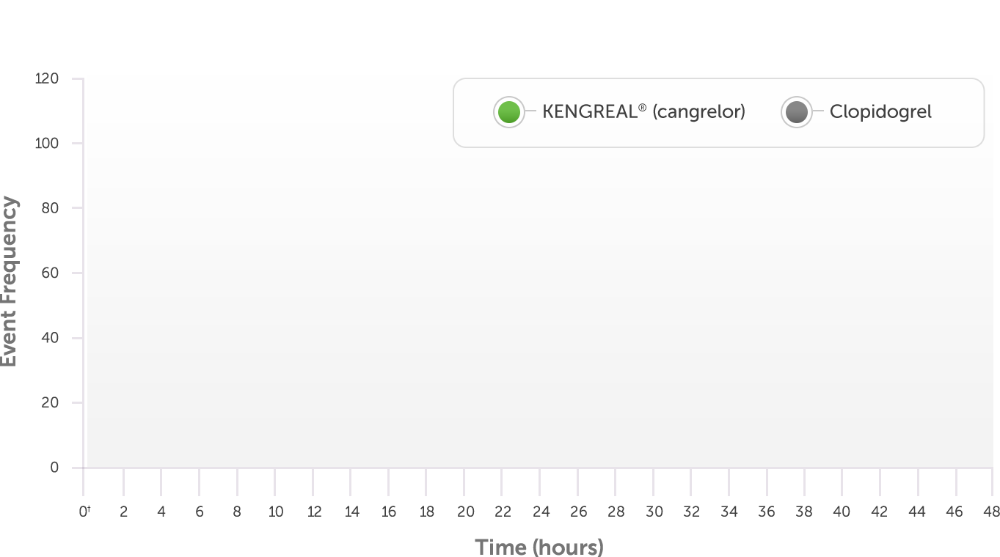

Time to death, SCAI MI, IDR, or ARC-ST from PCI start*3
*Data derived represents a post hoc supplemental analysis in which the study was powered for superiority at the 48-hour time frame. SCAI MI: CK-MB ≥10X ULN, or CK-MB ≥5X ULN with new Q waves or new LBBB. ARC-ST defined according to the ARC definition.
†Time 0 represents the start of PCI. KENGREAL for injection was administered at the time of PCI. Clopidogrel oral 300 mg or 600 mg was administered shortly before PCI or shortly afterward in patients randomized to clopidogrel.
ARC=Academic Research Consortium; CK‑MB=creatine kinase MB isoenzyme; MI=myocardial infarction; SCAI=Society for Cardiovascular Angiography and Interventions; ST=stent thrombosis.